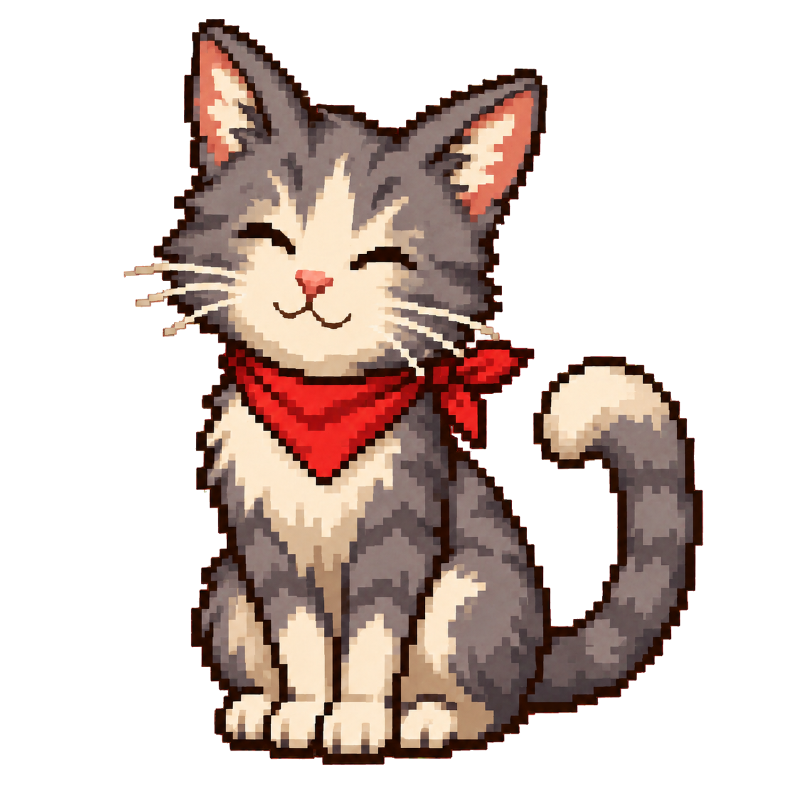
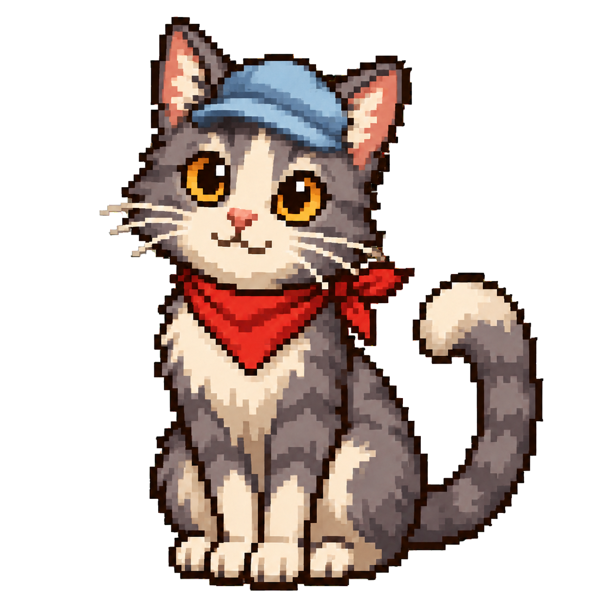
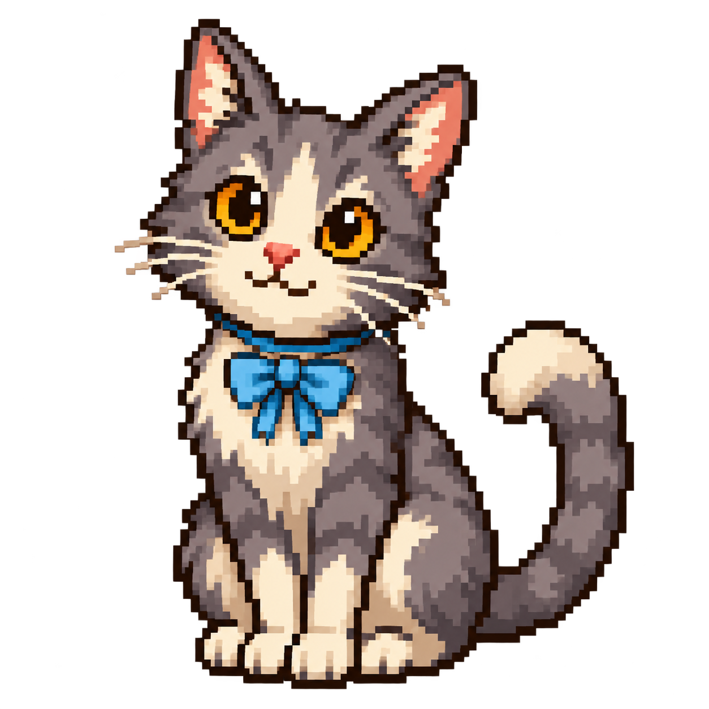

01
通常
元の猫の透過素材。比べる基準です。
TASK BOARD · CAT STYLE REVIEW
背景を固定した動きと、猫の4案を確認できます。帽子・リボンは猫と同じ絵に描き込んでいます。
確認用ページです。本アプリ・他のペット・経験値・ごほうび・保存データは変更していません。
元の猫の透過素材。比べる基準です。

目と表情が変わり、ほんの少しだけ反応。

輪郭・陰影・耳との重なりを揃えた帽子。

首元に馴染む結び目と布の折り目。
素材の透明度を確認中…
動くのは透過した猫の層だけです。背景を暗くしても、白い四角は付いてきません。
ボタンを押して確認できます。
おやつ・休憩は背景固定の仕組みを見るための仮モーションです。専用の食事・寝姿、装備付きの表情、成長段階ごとの差分は見た目の承認後に制作します。